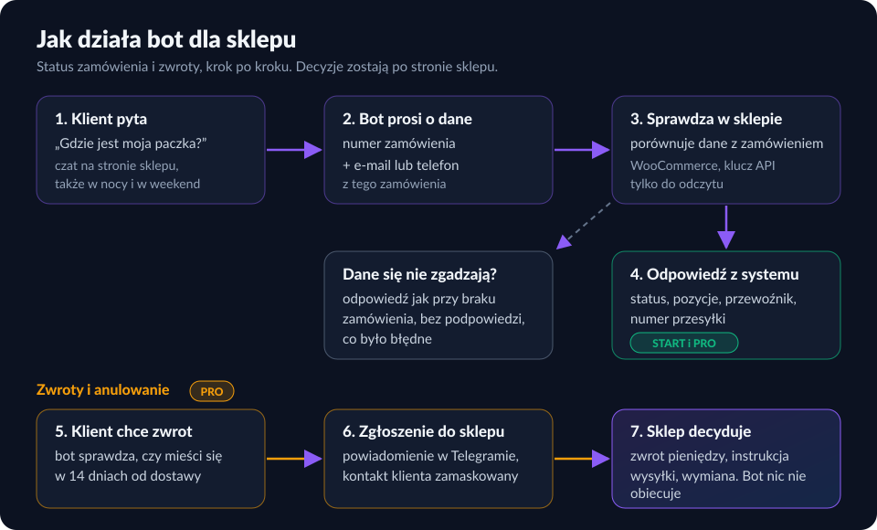

„Gdzie jest moja paczka?” — jak bot odpowiada na pytania o zamówienia i zwroty
Wśród pytań do sklepu internetowego najczęściej wraca jedno: gdzie jest zamówienie. Zaraz za nim są zwroty. To dobre pola dla bota, ale tylko wtedy, gdy bot nie zgaduje i nie obiecuje więcej, niż sklep chce dotrzymać.
Dlaczego te dwa tematy
Pytanie o paczkę ma jedną prawdziwą odpowiedź, która leży w systemie sklepu: status, przewoźnik, numer przesyłki. Człowiek odpisuje, otwierając panel i przepisując te dane. Bot może zrobić to samo w kilka sekund o każdej porze. Zwroty są trudniejsze, bo mają termin i konsekwencje finansowe, więc tu bot zbiera zgłoszenie, a decyduje sprzedawca.
Nie podajemy tu żadnych procentów „zaoszczędzonych zgłoszeń”, bo nie mamy jeszcze danych z wielu sklepów. Zamiast tego proponujemy prosty pomiar u Ciebie: przez tydzień policz, ile wiadomości dotyczy statusu zamówienia i zwrotów. To jest Twoja skala, a nie cudza średnia. Szerszy test opłacalności opisujemy w artykule Chatbot dla sklepu online — kiedy warto.
Status zamówienia: co musi umieć bot
- Zapytać o dwie rzeczy, nie o jedną. Numer zamówienia i e-mail lub telefon z zamówienia. Sam numer łatwo odgadnąć, więc nie wystarczy.
- Odpowiadać danymi z systemu, nie z głowy. Status, pozycje, przewoźnik, numer przesyłki pobiera system sklepu. Model językowy tylko prowadzi rozmowę.
- Nie zdradzać, czy dane „prawie pasują”. Błędny numer i błędny e-mail powinny dawać tę samą odpowiedź, bez podpowiedzi, które pole było złe.
- Przyznać się do braku danych. Gdy sklep chwilowo nie odpowiada, bot mówi to wprost i odsyła do zespołu.
Zwroty: bot przyjmuje, sklep decyduje
Konsument ma 14 dni od otrzymania towaru na odstąpienie od umowy zawartej na odległość, bez podawania przyczyny. Bot może sprawdzić, czy zamówienie mieści się w tym terminie, i zapisać zgłoszenie. Co dalej: instrukcję odesłania, koszt przesyłki zwrotnej i zwrot pieniędzy ustala sklep zgodnie ze swoim regulaminem i przepisami. Szczegóły prawne zawsze warto potwierdzić u prawnika albo w materiałach UOKiK.
- W terminie: zgłoszenie trafia do sklepu (u nas jako powiadomienie w Telegramie), klient dostaje informację, że sklep się odezwie.
- Po terminie: bot nie odmawia „z urzędu”, tylko informuje o upływie terminu i wskazuje reklamację, jeśli towar ma wadę.
- Przed wysyłką: zamiast zwrotu przyjmuje prośbę o anulowanie, którą sklep potwierdza.
- Reklamacje: bot zbiera opis wady i numer zamówienia. Rozpatruje je człowiek.
Czego bot w tym obszarze nie powinien robić
- Obiecywać zwrotu pieniędzy, wymiany ani konkretnego terminu.
- Prosić o dane karty, hasła lub PESEL.
- Powtarzać w rozmowie pełnego adresu e-mail i telefonu klienta.
- Udawać człowieka. Jeśli klient pyta, bot przyznaje, że jest asystentem AI.
Więcej o granicach botów: Czego bot nie powinien robić.
Jak to wygląda w KREATO
Przygotowaliśmy takiego bota w dwóch wariantach: Start (299 zł netto miesięcznie) odpowiada na pytania i sprawdza status, a Pro (399 zł) przyjmuje też zwroty i anulowania z powiadomieniem do sklepu. W planie rocznym płacisz za 10 miesięcy i korzystasz 12 (249 i 333 zł). WooCommerce wdrażamy pilotażowo, Shoptet i Shopify są w przygotowaniu. Pełny opis: Bot dla sklepu internetowego.

Czy to się opłaca, zależy od Twoich liczb. Rachunek z założeniami i kalkulator znajdziesz na stronie bota: jak sklep zarabia na bocie. Przy kilku pytaniach w tygodniu zwrot z takiego bota jest mało prawdopodobny, a przy kilkuset miesięcznie można go policzyć na czasie obsługi.
Najczęstsze pytania
Czy bot może sam zdecydować o zwrocie pieniędzy?
Nie powinien. Może przyjąć zgłoszenie, sprawdzić termin i przekazać sprawę sklepowi. Decyzja o zwrocie i jego forma należą do sprzedawcy.
Ile czasu klient ma na zwrot zakupów online?
Konsument ma 14 dni od otrzymania towaru na odstąpienie od umowy zawartej na odległość, bez podawania przyczyny. Sprzedawca zwraca pieniądze w ciągu 14 dni od otrzymania oświadczenia o odstąpieniu i może wstrzymać zwrot do czasu odzyskania towaru. W razie wątpliwości warto zapytać prawnika lub sprawdzić informacje UOKiK.
Czy bot może podawać status zamówienia każdemu, kto zna numer?
Nie. Sam numer zamówienia to za mało: bot powinien żądać drugiego elementu, np. e-maila lub telefonu z zamówienia, i przy niezgodności odpowiadać tak, jakby zamówienia nie było.
Powiązane na stronie: Bot dla sklepu · Chatbot dla sklepu online · Baza wiedzy dla bota · Wszystkie artykuły
Masz pytanie albo chcesz zobaczyć, jak to działa u Ciebie?
Napisz do nas — odpiszemy e-mailem.
biuro@kreato.tech